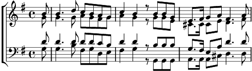

1. Betrachtend deine Huld und Güte, o mein Erlöser, gegen mich,
seh ich beim letzten Abendmahle im Kreise deiner Teuren dich.
Du brichst das Brot, du reichst den Becher,
du sprichst: Dies ist mein Leib, mein Blut;
nehmt hin und denket meiner Liebe, wenn opfernd ihr ein Gleiches tut,
wenn opfernd ihr ein Gleiches tut.
2. Wir opfern hier nach deinem Worte, auf deinem heiligen Altar;
und du, mein Heiland, bist zugegen, des Geistes Aug wird dich gewahr.
Herr, der du Schmerz und Tod getragen, um uns das Leben zu verleihn,
lass dieses Himmelsbrot uns Labung im Leben und im Tode sein,
im Leben und im Tode sein!